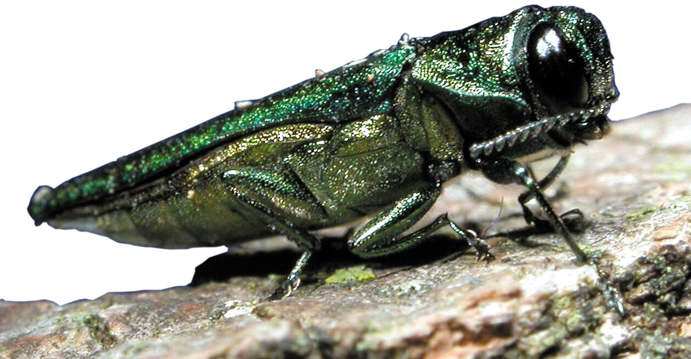

Emerald Ash Borer
Welcome to the very informative page about the very deadly bug, the Emerald Ash Borer. This bug is an exotic beetle that was found in SE Michigan, summer of 2002. These bugs feed off the the inner bark of ash trees, which is very harmful to the tree. The bug has killed hundreds of millions of ash trees in North America.
There is ways to repel this bug from your ash trees and here at Jedds Tree Service we want you to know what we can do for you. If your tree has already been infected with this bug, for a low price, we will treat your tree with effective systemic insecticides.
http://www.emeraldashborer.info/documents/Multistate_EAB_Insecticide_Fact_Sheet.pdf; 